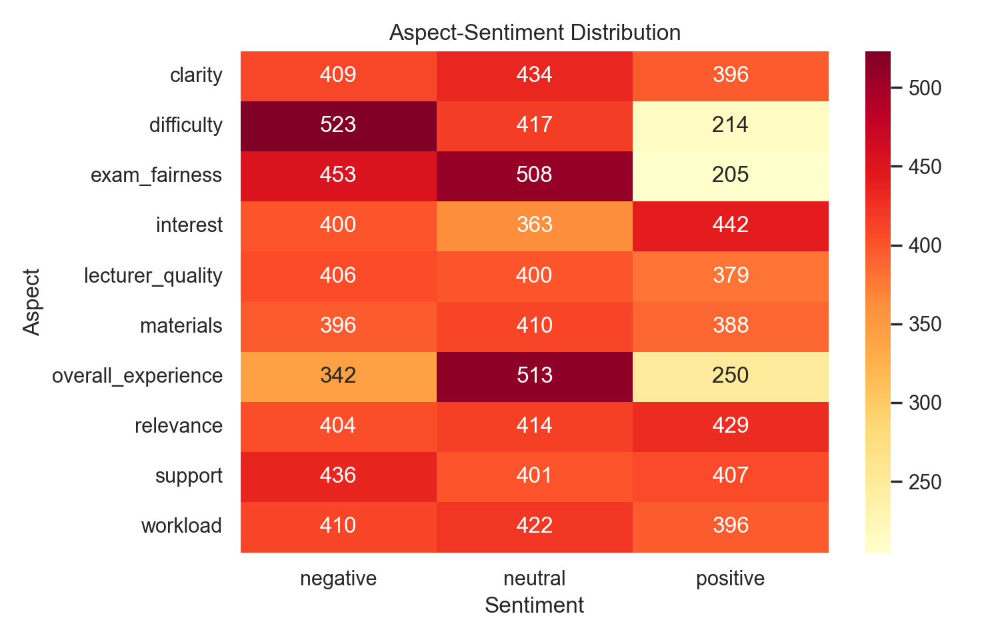
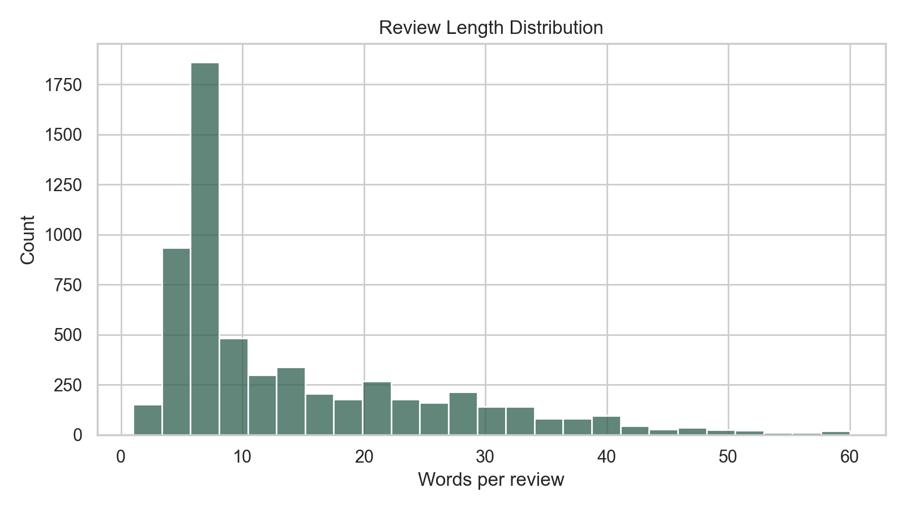
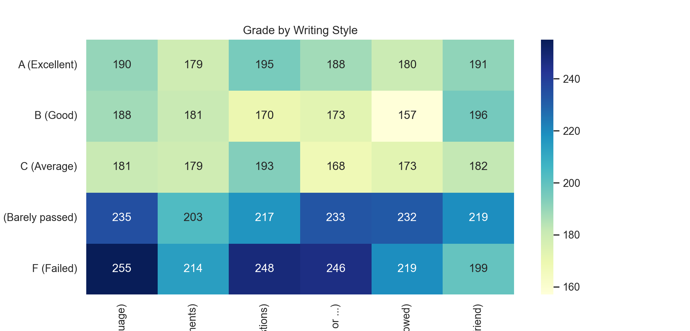
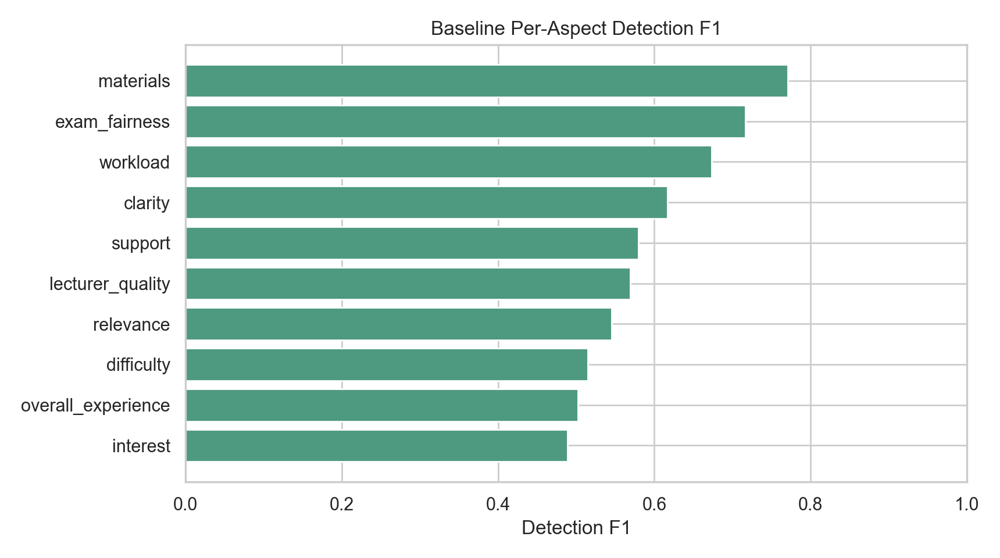
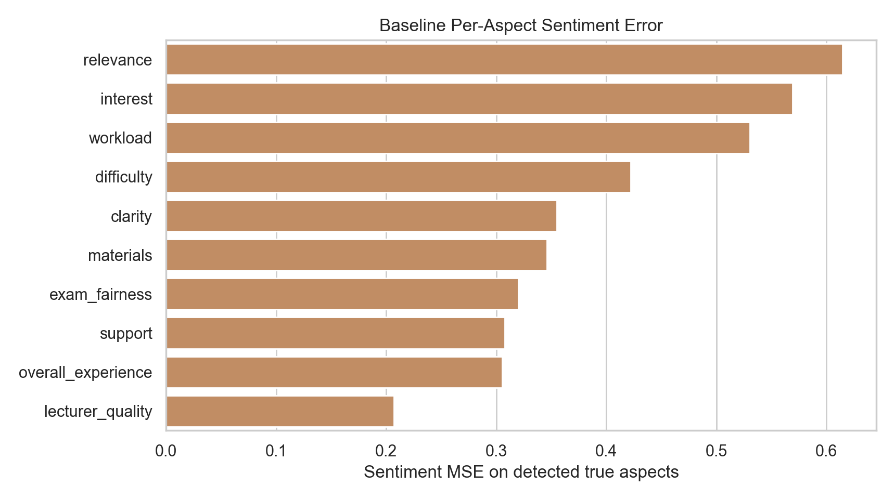
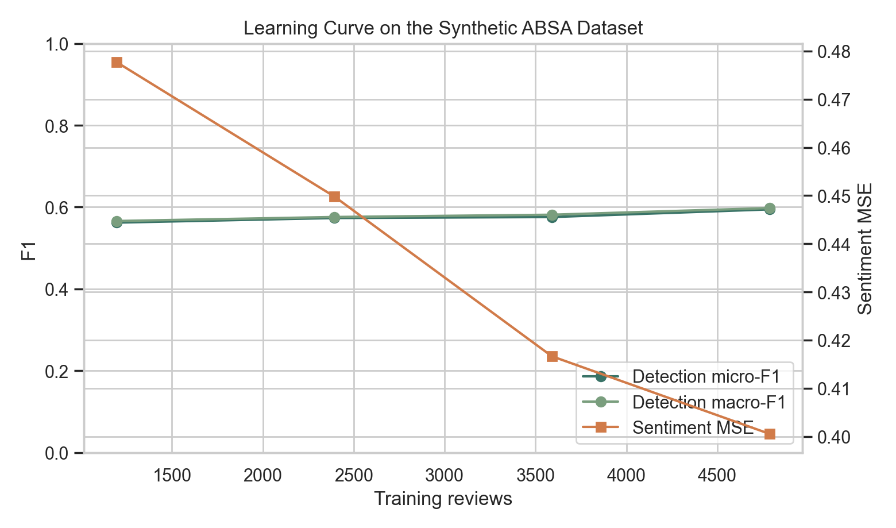
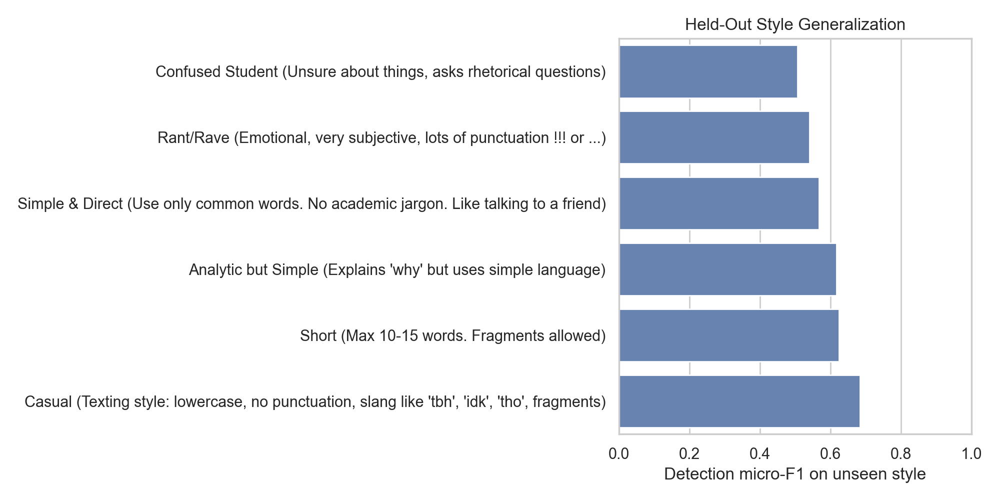

Toward Synthetic Aspect-Based Sentiment Analysis for Higher Education Course Reviews: A Dual-Pipeline Study of Data Generation and ABSA Modeling
Abstract
Manual annotation for aspect-based sentiment analysis (ABSA) in higher education is expensive, domain-specific, and difficult to scale across diverse writing styles. This paper studies a synthetic-data-centered workflow for educational ABSA that combines two linked contributions: (1) a local large-language-model pipeline for generating labeled student course reviews with aspect-level sentiment annotations, and (2) an ABSA analysis pipeline that detects aspects and estimates sentiment polarity for each detected aspect. The released dataset contains 5,984 minimally cleaned reviews derived from 6,000 generated records, covers 10 educational aspects, and averages 2 labeled aspects per review. To strengthen the evidence base beyond a single notebook run, we add exploratory data analysis, representative qualitative examples, multi-seed baseline experiments, a learning-curve study, and held-out-style robustness tests. The project notebook reports strong recorded test performance for the BERT-based pipeline on a separate cleaned split of 5,052 reviews, with per-aspect precision ranging from 0.7342 to 1.0000 and sentiment mean squared error (MSE) ranging from 0.0107 to 0.1239. On the released dataset, an additional TF-IDF baseline averaged 0.5979 micro-F1 across three random splits and improved steadily as more synthetic training data were added. These results suggest that the synthetic corpus is internally learnable and stylistically varied, but a journal-ready claim still requires validation on real student feedback and direct ablations of the generation pipeline.
1. Introduction
Student reviews contain actionable evidence about workload, clarity, support, fairness, materials, and overall learning experience, yet most institutional feedback analysis still depends on manual reading or coarse sentiment summaries. ABSA is better suited to this setting because the same review can simultaneously praise one aspect and criticize another. The challenge is that high-quality educational ABSA datasets are scarce, expensive to annotate, and often limited to a single institution, course type, or annotation scheme.
The present project addresses that bottleneck by pairing synthetic data generation with downstream ABSA modeling. Instead of treating data generation and model training as separate tasks, the repository already encodes them as an end-to-end workflow: a synthetic review generator produces multi-aspect course reviews in multiple student personas, and a BERT-based analysis pipeline learns aspect detection and sentiment scoring from those labels. For a journal submission, however, the repository alone is not enough; it must be translated into a defensible scientific contribution with explicit evidence boundaries, additional analyses, and reviewer-facing limitations.
The strongest claim this version can safely support is therefore narrow: a synthetic educational review corpus with controlled aspect labels can support internally consistent ABSA training, produce diverse review forms, and serve as a useful experimental testbed for educational opinion mining. The manuscript does not claim that synthetic data yet replaces manually annotated educational feedback or that the observed gains will transfer unchanged to real institutional review data.
2. Literature Review
The proposed work sits at the intersection of three literatures: general ABSA benchmarks and methods, synthetic text data generation for classification, and educational feedback analysis. SemEval task definitions helped establish ABSA as a standard fine-grained sentiment problem by formalizing aspect detection and aspect sentiment prediction with shared datasets and evaluation procedures [1, 2]. More recent ABSA work continues to show the value of pretrained transformers and sentiment-aware pretraining for fine-grained polarity modeling [3, 4].
On the data side, recent large-language-model studies show both the promise and the limitations of synthetic text generation for supervised NLP. Synthetic data can reduce annotation cost and bootstrap label-rich corpora, but performance depends strongly on task properties and on how well the generation process controls quality, diversity, and label faithfulness [5]. This caution is especially relevant here because educational ABSA is a subjective and domain-specific task.
In education, prior work has emphasized that student feedback is noisy, stylistically varied, and pedagogically important. Welch and Mihalcea demonstrated the value of targeted sentiment analysis for student comments [6], while Chathuranga et al. released an annotated student course feedback corpus for opinion targets and polarity [7]. Nikolić et al. further showed that ABSA can be informative for higher education reviews, but that source characteristics matter and performance varies across aspect frequencies and review sources [8]. A recent review by Shaik et al. also identifies ambiguity, domain language, and annotation scarcity as recurring obstacles for educational feedback analysis [9]. Together, this literature supports the relevance of the problem and explains why a synthetic educational ABSA resource may be useful, while also motivating the need for stronger external validation than synthetic-only experiments can provide.
3. Methodology
3.1 Synthetic Data Generation Pipeline
This pipeline is reconstructed from the repository documentation and generation notebooks.
grade, course, lecturer, style, aspect labels
forbidden phrases, persona rules, aspect targets
draft synthetic student review
repair label mismatches and improve stylistic fit
typos, slang, casing variation, JSONL output
3.2 ABSA Analysis Pipeline
This pipeline follows the released training notebook.
bert-base-uncased10 binary outputs with BCE loss
10 scores in [-1, 1] with masked MSE
threshold sweep on a held-out split
accuracy, precision, recall, MSE
3.3 Dataset Used in This Draft
The released JSONL file contains 6,000 synthetic records. After minimal cleaning that removed blank review texts and preserved only reviews with at least one valid labeled aspect, 5,984 reviews remained. The cleaned corpus spans 14 course names, 8 lecturers, and 10 aspect categories. Reviews are short by design: the mean length is 14.03 words, the median is 9 words, and each review contains an average of 2 labeled aspects.
| Table 1. Dataset Summary | Value | Interpretation |
|---|---|---|
| Clean reviews | 5,984 | Usable records for current experiments |
| Course names | 14 | Multiple academic contexts rather than a single course |
| Lecturers | 8 | Named entities present in the synthetic reviews |
| Aspect inventory | 10 | clarity, difficulty, exam_fairness, interest, lecturer_quality, materials, overall_experience, relevance, support, workload |
| Mean / median words | 14.03 / 9 | Short-form review style dominates the corpus |
| Mean aspects per review | 2.0 | Many reviews are genuinely multi-aspect |
| Min-max words | 1-60 | Substantial variation in compression and detail |
3.4 Additional Experiments Added for This Paper
- Exploratory data analysis on review length, aspect-sentiment counts, aspect co-occurrence, and grade-style balance.
- A reproducible TF-IDF baseline with 80/10/10 train-calibration-test splits across three random seeds.
- A learning-curve study using 25%, 50%, 75%, and 100% of the training data.
- A held-out-style generalization experiment to test robustness to unseen writing styles.
- Representative qualitative examples for mixed-polarity and persona-specific reviews.
4. Results

relevance, interest, and overall_experience.

4.1 Representative Data Examples
| Table 2. Representative Reviews | Style | Aspect labels | Excerpt |
|---|---|---|---|
| Mixed polarity | Casual texting | clarity=neutral, exam_fairness=negative, relevance=positive |
"prof levi's ds course was fine tbh ... exams tho were super unfair ... but still passed and got an a" |
| Analytic | Analytic but Simple | workload=positive, support=positive, relevance=positive |
"the workload was heavy but doable ... office hours were super helpful ... useful for real-life problems" |
| Rant | Rant/Rave | materials=neutral, difficulty=negative, relevance=positive |
"cyber sec basics was so hard!!! ... i got lost ... but at least we did real world stuff that made sense" |
4.2 Recorded Notebook Results for the BERT-Based Pipeline
The repository notebook already contains a full BERT-based run on a separate cleaned file with 5,052 reviews and a 4,041/505/506 train-calibration-test split. Those recorded results are important because they reflect the intended ABSA modeling contribution of the project. They should be treated as recorded project evidence rather than as a rerun from this paper script.
| Table 3. Recorded Notebook Per-Aspect Test Results | Precision | Recall | MSE | Threshold |
|---|---|---|---|---|
exam_fairness | 1.0000 | 1.0000 | 0.0166 | 0.95 |
materials | 0.9700 | 0.9898 | 0.0253 | 0.65 |
support | 0.9639 | 0.9639 | 0.0107 | 0.85 |
workload | 0.9200 | 0.9684 | 0.0478 | 0.30 |
lecturer_quality | 0.8889 | 0.9143 | 0.0693 | 0.10 |
clarity | 0.9379 | 0.9379 | 0.0311 | 0.75 |
interest | 0.8636 | 0.9048 | 0.0207 | 0.70 |
difficulty | 0.8652 | 0.8750 | 0.1239 | 0.80 |
relevance | 0.7857 | 0.9296 | 0.0501 | 0.30 |
overall_experience | 0.7342 | 0.8406 | 0.0159 | 0.30 |
4.3 Additional Baseline and Robustness Evidence
To make the paper less dependent on a single notebook output, we trained an additional TF-IDF baseline on the released JSONL dataset. Across three random splits, the baseline achieved a mean detection micro-F1 of 0.5979 (standard deviation 0.0140) and a mean detected-aspect sentiment MSE of 0.4329 (standard deviation 0.0292). These scores are much lower than the recorded BERT notebook results, which is expected, but they serve two useful functions: they confirm that the released dataset supports learnable structure, and they provide a reproducible non-neural reference point for future model comparisons.
| Table 4. Multi-Seed Baseline Summary | Mean | Std. |
|---|---|---|
| Detection micro-precision | 0.6432 | 0.0241 |
| Detection micro-recall | 0.5592 | 0.0178 |
| Detection micro-F1 | 0.5979 | 0.0140 |
| Detection macro-F1 | 0.6048 | 0.0130 |
| Sentiment MSE on detected aspects | 0.4329 | 0.0292 |
| Sentiment polarity accuracy | 0.5214 | 0.0210 |


lecturer_quality and overall_experience, and hardest for relevance, interest, and workload.4.4 Learning Curve and Style Robustness
Reviewer-facing evidence is stronger when it shows whether performance improves consistently with additional synthetic data and whether stylistic diversity translates into robustness. Both tests were positive, although not uniformly strong. Detection micro-F1 rose from 0.5621 at 25% of the training set to 0.5945 with the full training set, while sentiment MSE decreased from 0.4777 to 0.4005. This pattern is consistent with the intended use of the dataset as scalable synthetic supervision.

We also tested style generalization by training on five styles and evaluating on the sixth unseen style. The best held-out result occurred for the casual texting style (micro-F1 = 0.6835), while the confused-student style was clearly hardest (micro-F1 = 0.5060). This matters because it shows that style diversity helps, but also that rhetorical uncertainty remains a failure mode worth deeper analysis.

Reviewer-Facing Interpretation
If this manuscript were reviewed today, the strongest positive point would be that it now includes more than a synthetic-data story: it contains a concrete dataset characterization, qualitative examples, a model pipeline, a calibration strategy, additional baselines, a learning curve, and a robustness test. The main reservation would remain external validity. The current evidence demonstrates internal learnability on synthetic reviews, but not transfer to real student feedback.
5. Conclusion
This project can support a credible paper if it is framed as a synthetic educational ABSA resource plus an internally validated ABSA pipeline, not yet as a replacement for manually annotated real-world educational data. The released data are diverse in style, multi-aspect in structure, and sufficiently regular to support both transformer-based and classical baselines. The strongest evidence in the current version is the combination of two coherent pipelines: a synthetic data generation workflow designed to produce aspect-labeled educational reviews, and an ABSA analysis pipeline that performs aspect detection, sentiment regression, and threshold calibration.
The clearest next step for journal acceptance is to connect the synthetic corpus to an external reality check. That means evaluating transfer to real student comments, adding human judgment of label fidelity and realism, and isolating which generation components matter most. Until then, the paper should emphasize dataset construction, pipeline design, internal consistency, and the role of synthetic supervision as a scaffold for educational ABSA research.
Highest-Value Missing Experiments
- Train on the synthetic corpus and test on a real manually annotated student-feedback dataset.
- Run a human evaluation of review realism, aspect faithfulness, and sentiment-label correctness.
- Ablate the two-pass refinement, persona prompting, and noise injection steps in the generation pipeline.
- Compare synthetic-only training against synthetic-plus-small-real-data fine-tuning.
- Add systematic error analysis for the weakest settings, especially confused-student style and difficult/relevance aspects.
Bibliography
- Maria Pontiki, Haris Papageorgiou, Dimitrios Galanis, Ion Androutsopoulos, John Pavlopoulos, and Suresh Manandhar. 2014. SemEval-2014 Task 4: Aspect Based Sentiment Analysis. Proceedings of the 8th International Workshop on Semantic Evaluation, pages 27-35.
- Maria Pontiki, Dimitris Galanis, Haris Papageorgiou, Ion Androutsopoulos, Suresh Manandhar, Mohammad AL-Smadi, Mahmoud Al-Ayyoub, Yanyan Zhao, Bing Qin, Orphée De Clercq, Véronique Hoste, Marianna Apidianaki, Xavier Tannier, Natalia Loukachevitch, Evgeniy Kotelnikov, Nuria Bel, Salud María Jiménez-Zafra, and Gülşen Eryiğit. 2016. SemEval-2016 Task 5: Aspect Based Sentiment Analysis. Proceedings of SemEval-2016, pages 19-30.
- Jacob Devlin, Ming-Wei Chang, Kenton Lee, and Kristina Toutanova. 2019. BERT: Pre-training of Deep Bidirectional Transformers for Language Understanding. Proceedings of NAACL-HLT 2019, pages 4171-4186.
- Yice Zhang, Yifan Yang, Bin Liang, Shiwei Chen, Bing Qin, and Ruifeng Xu. 2023. An Empirical Study of Sentiment-Enhanced Pre-Training for Aspect-Based Sentiment Analysis. Findings of ACL 2023, pages 9633-9651.
- Zhuoyan Li, Hangxiao Zhu, Zhuoran Lu, and Ming Yin. 2023. Synthetic Data Generation with Large Language Models for Text Classification: Potential and Limitations. EMNLP 2023, pages 10443-10461.
- Charles Welch and Rada Mihalcea. 2016. Targeted Sentiment to Understand Student Comments. COLING 2016, pages 2471-2481.
- Janaka Chathuranga, Shanika Ediriweera, Ravindu Hasantha, Pranidhith Munasinghe, and Surangika Ranathunga. 2018. Annotating Opinions and Opinion Targets in Student Course Feedback. LREC 2018 Workshop paper.
- Nikola Nikolić, Olivera Grljević, and Aleksandar Kovačević. 2020. Aspect-based sentiment analysis of reviews in the domain of higher education. The Electronic Library, 38(1), 44-64.
- Thanveer Shaik, Xiaohui Tao, Yan Li, Christopher Dann, Jacquie McDonald, Petrea Redmond, and Linda Galligan. 2022. A Review of the Trends and Challenges in Adopting Natural Language Processing Methods for Education Feedback Analysis. IEEE Access, 10, 56720-56739.
Source note: local experimental values in this draft come from [E:\Projects\CourseABSA\paper\outputs](E:\Projects\CourseABSA\paper\outputs), while notebook-reported BERT results were extracted from [E:\Projects\CourseABSA\edu\absa_train_new.ipynb](E:\Projects\CourseABSA\edu\absa_train_new.ipynb).